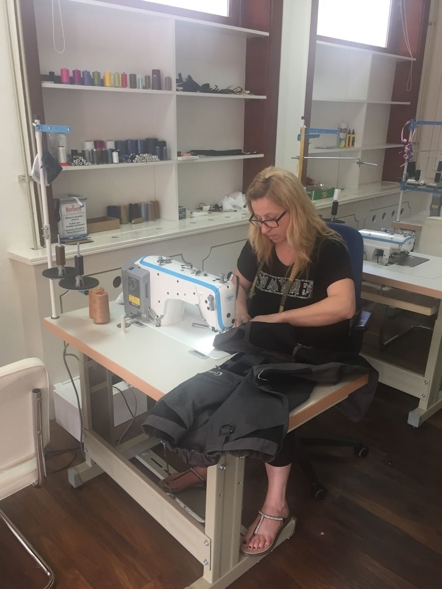
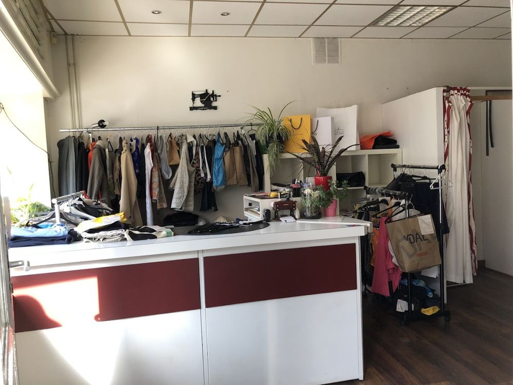
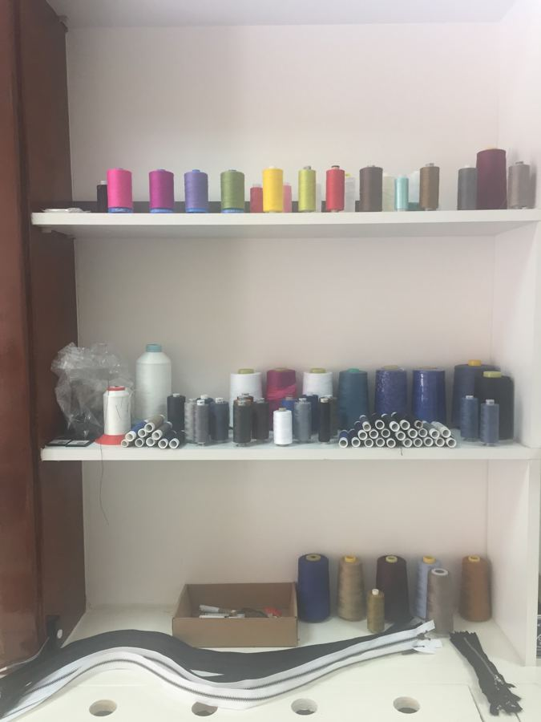
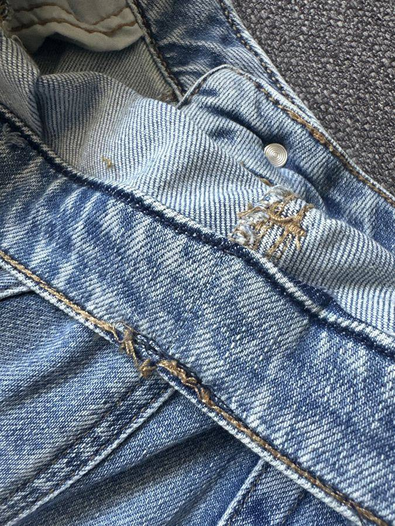
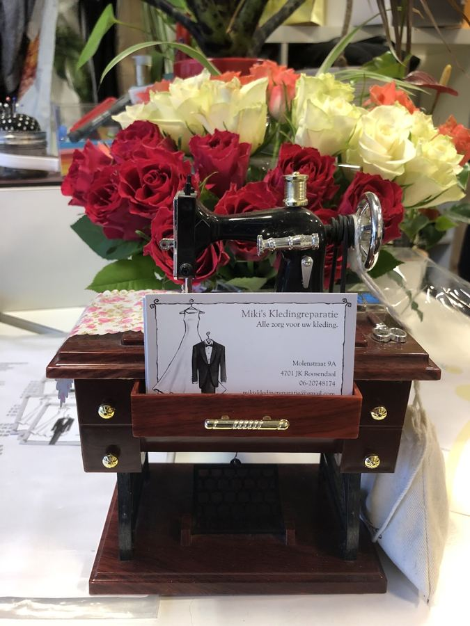
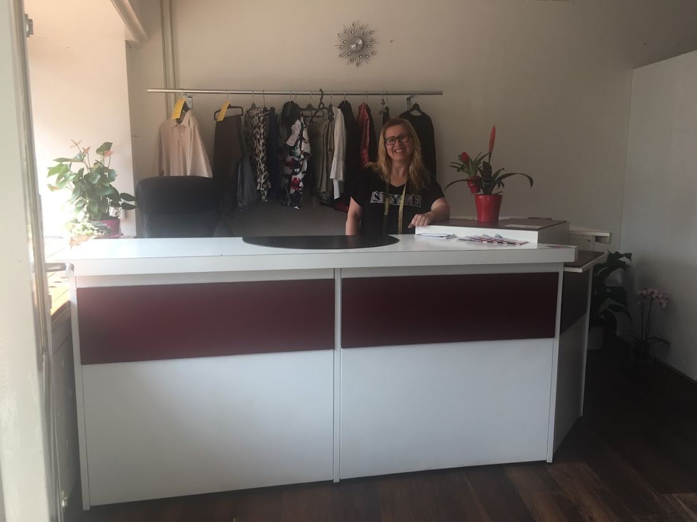

Van een spijkerbroek die te lang is tot een jas met een kapotte rits.
Inkorten of innemen in de taille, netjes afgewerkt.
Rits kapot? Soms is hij te repareren en hoeft er geen nieuwe in.
Gordijnen op de juiste lengte, keurig verkort.
Jassen en andere kleding: vraag gerust wat er kan.
Twijfelt u of iets te maken is? Stuur een foto via WhatsApp →
Aan de Molenstraat 9a, midden in Roosendaal.




Ontzettend vriendelijke en kundige vrouw. Super leuk gesprek gehad zowel inhoudelijk over het werk alsook privé. Ze heeft werkelijk altijd de beste oplossing voor een probleem. De rits van onze jas was kapot, binnen 2 minuten had ze dit opgelost en er hoefde geen nieuwe in.Sandra · Google
Heel blij met mijn gordijnen die super netjes verkort zijn! Ze waren snel klaar (kon ze een dag later ophalen) en erg goede service. Goede prijs.Doraly L. · Google
Alleen maar tevreden! Klantvriendelijk en goede service.Eveline · Google

Een klein, persoonlijk adres voor kledingreparatie in het centrum van Roosendaal. U wordt aan de toonbank geholpen door dezelfde persoon die daarna achter de naaimachine zit.
Zo weet u precies met wie u te maken hebt. We kijken samen wat er moet gebeuren en zoeken de beste oplossing voor uw kleding.
Bel of app gerust met uw vraag, of loop binnen tijdens de openingstijden.
Alle zorg voor uw kleding.
| Maandag | 12:30 – 18:00 |
| Dinsdag | 09:30 – 18:00 |
| Woensdag | 09:30 – 18:00 |
| Donderdag | 09:30 – 18:00 |
| Vrijdag | 09:30 – 20:00 |
| Zaterdag | 10:00 – 17:00 |
| Zondag | Gesloten |